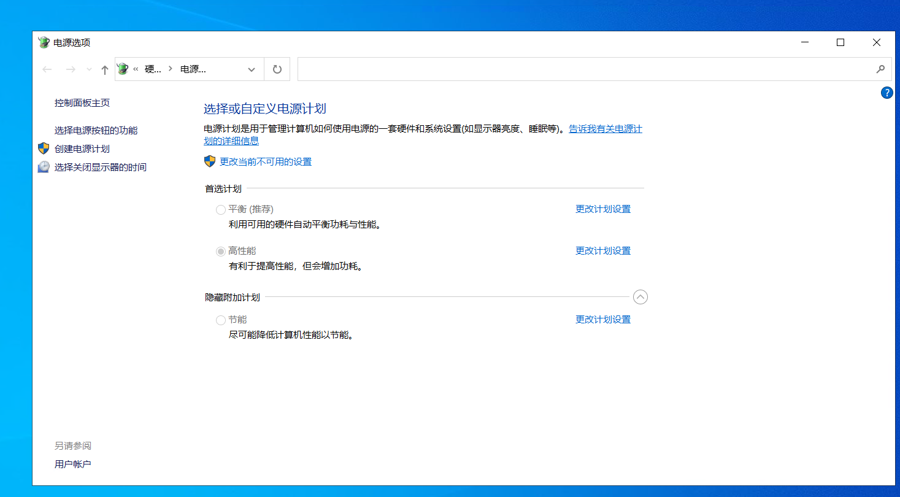
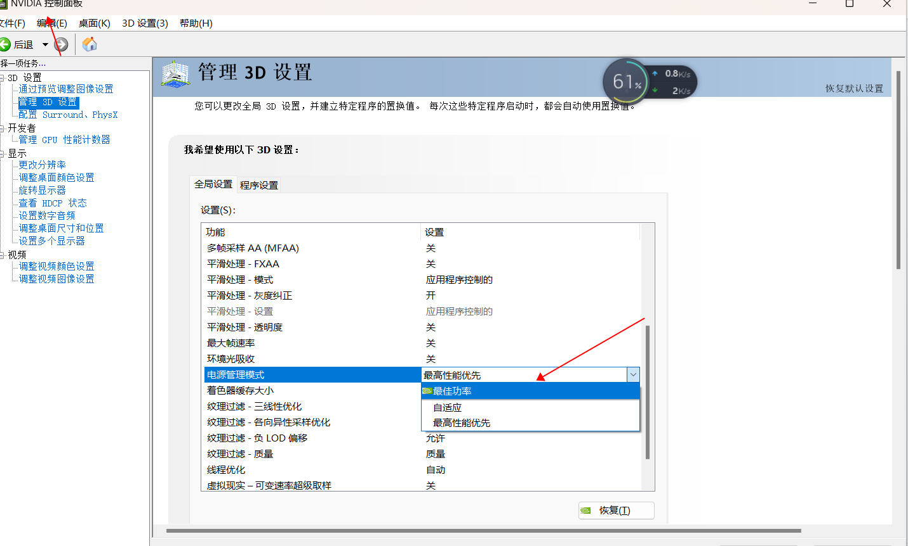
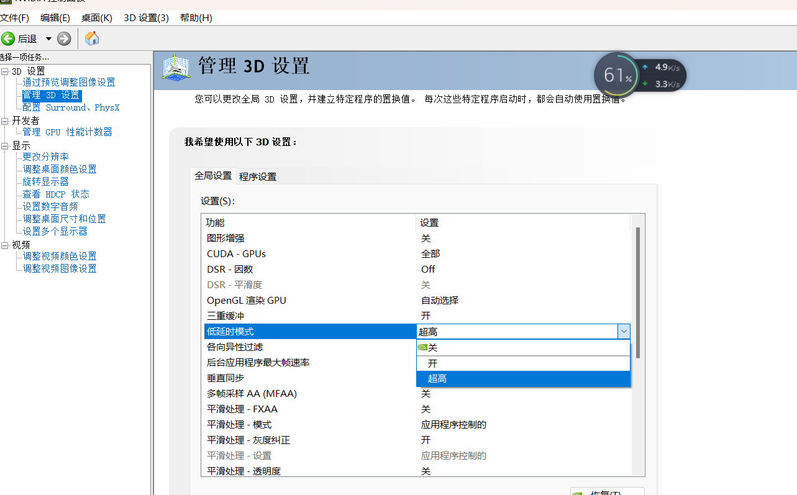
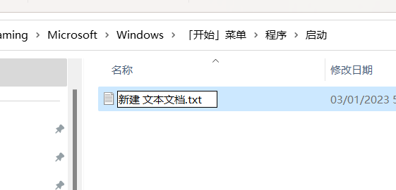
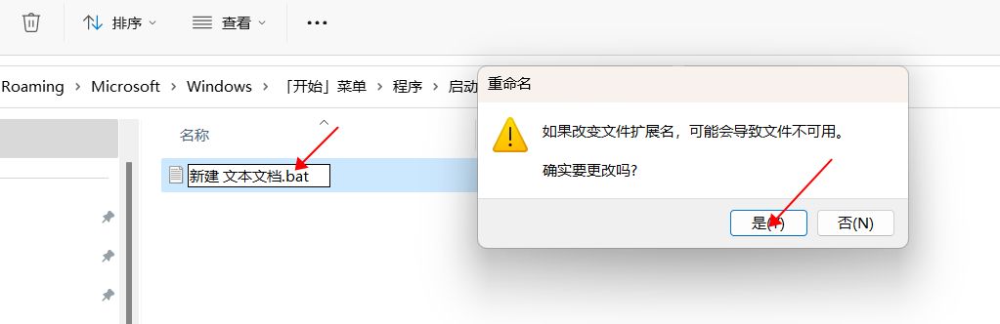
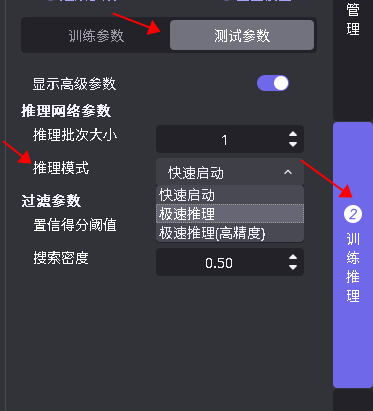
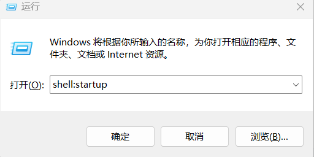
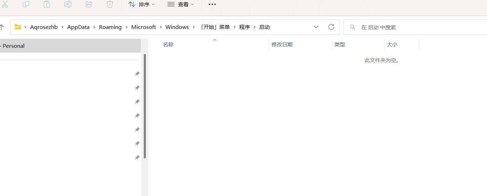
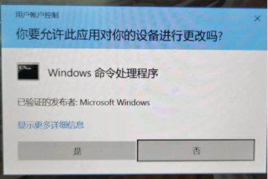

最优性能指南
AIDI 实际的运行速度与 Nvidia GPU 的驱动设置、部署环境（硬件所在的环境）、软件设置息息相关，对此给出以下建议：
1、注意散热 ；Nvidia 驱动为了保护显卡，设置温度墙 85 度。如果显卡温度高于 85 度，Nvidia 会自动降低计算性能，导致推理速度变慢 ；例如 AIDI 智能相机没有主动散热功能，需要用户增加外部散热的组件，否则推理速度在运行一段时间后，会变慢；例如 部署环境是比较密闭环境，由于散热问题，推理速度也会变慢
2、系统电源设置 （详情见下）；需要开启高性能模式，不然推理速度波动较大
3、Nvidia 驱动设置 （详情见下）; 此设置有利于减少速度波动，提高推理速度
4、推理批次大小影响推理速度; 极速推理批次越大，模型主体推理速度 (GPU 函数处理部分) 越快，但是 AIDI 的前向图像处理后向处理，都是在 CPU 上而且 AIDI 没有考虑到前向或者后向处理多批次大小并行，所以批次大小增大，在绝大部分情况下 ，速度提升并不明显。
5、在实际部署场景中或者测试速度时，使用极速推理模式；极速推理模式一般比快速启动快一倍以上（定位模块除外）
系统电源设置
电源设置为 高性能模式

Nvidia 驱动设置
GPU 电源模式

低时延模式
Nvidia 控制面板->低延时模式-> 超高

锁定显卡频率
注意此设置关机后重置，每次开机都需要设置
设置方法1：
方法1、安装目录下搜索 gpu_set_gpu_mem_clock.bat，以管理员权限运行
设置方法2：
方法2、如果没有找到，可以通过以下步骤，生成设置脚本
① 新建 txt文件，将以下代码拷贝到新建的 txt 文件中

② 将 txt 后缀改成 bat

③ 以管理员权限运行
如果为了简化操作，可以在 windows 下设置开机自启（如何设置开机自启，看附录 ）
@echo off
%1 mshta vbscript:CreateObject("Shell.Application").ShellExecute("cmd.exe","/c %~s0 ::","","runas",1)(window.close)&&exit
Set SuccessFindMaxClock=0
FOR /F "tokens=1,3" %%i IN ('nvidia-smi -q -d SUPPORTED_CLOCKS') DO (
if "%%i" == "Memory" (
echo %%i %%j
Set ClockValue=%%j
Set SuccessFindMaxClock=1
GOTO SetClock
)
)
:SetClock
echo SuccessFindMaxClock %SuccessFindMaxClock%
IF %SuccessFindMaxClock%==1 (
echo "nvidia-smi -lgc %ClockValue%,%ClockValue%"
nvidia-smi -lgc %ClockValue%,%ClockValue%
nvidia-smi -lmc %ClockValue%,%ClockValue%
) else (
echo "Failed to find max clock."
)
pause
开启计算模式
如果 GPU 显卡是 Quadro 或者 Tesla 系列显卡，可以开启计算模式，来发挥 显卡的最大性能 如果是 GeForce 显卡无须对此进行设置
nvidia-smi -dm 1
速度测试建议
Nvidia 显卡由于电流和温度影响，所以 一个 client 前几十张图速度波动加大，建议二次开发测试速度时，可以跳过前 100 张图。
极速推理模式
可以通过 AIDI 打开工程，然后 测试参数-> 显示高级参数->推理模式->极速推理

附录
Windows 脚本开机自启
1、 win + R 输入 shell:startup，然后回车

2、将脚本拷贝在上一步出现的文件下

3、每次开机都会有弹窗，点击确认
